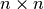
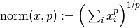
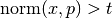
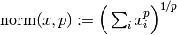
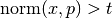
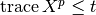
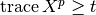
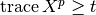
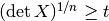

Warning
You are consulting the doc of a former version of PICOS. The latest version is HERE.
picos.tools¶
-
picos.tools.available_solvers()¶ Lists all available solvers
-
picos.tools.diag(exp, dim=1)¶ if
expis an affine expression of size (n,m),diag(exp,dim)returns a diagonal matrix of sizedim*n*m
dim*n*m, withdimcopies of the vectorized expressionexp[:]on the diagonal.In particular:
- when
expis scalar,diag(exp,n)returns a diagonal matrix of size , with all diagonal elements equal toexp. - when
expis a vector of size ,
, diag(exp)returns the diagonal matrix of size with the vectorexpon the diagonal
Example
>>> import picos as pic >>> prob=pic.Problem() >>> x=prob.add_variable('x',1) >>> y=prob.add_variable('y',1) >>> pic.tools.diag(x-y,4) # (4 x 4)-affine expression: Diag(x -y) # >>> pic.tools.diag(x//y) # (2 x 2)-affine expression: Diag([x;y]) #
- when
-
picos.tools.diag_vect(exp)¶ Returns the vector with the diagonal elements of the matrix expression
expExample
>>> import picos as pic >>> prob=pic.Problem() >>> X=prob.add_variable('X',(3,3)) >>> pic.tools.diag_vect(X) # (3 x 1)-affine expression: diag(X) #
-
picos.tools.lowtri(exp)¶ if
expis a square affine expression of size (n,n),lowtri(exp)returns the (n(n+1)/2)-vector of the lower triangular elements ofexp.Example
>>> import picos as pic >>> import cvxopt as cvx >>> prob=pic.Problem() >>> X=prob.add_variable('X',(4,4),'symmetric') >>> pic.tools.lowtri(X) # (10 x 1)-affine expression: lowtri(X) # >>> X0 = cvx.matrix(range(16),(4,4)) >>> X.value = X0 * X0.T >>> print X [ 2.24e+02 2.48e+02 2.72e+02 2.96e+02] [ 2.48e+02 2.76e+02 3.04e+02 3.32e+02] [ 2.72e+02 3.04e+02 3.36e+02 3.68e+02] [ 2.96e+02 3.32e+02 3.68e+02 4.04e+02] >>> print pic.tools.lowtri(X) [ 2.24e+02] [ 2.48e+02] [ 2.72e+02] [ 2.96e+02] [ 2.76e+02] [ 3.04e+02] [ 3.32e+02] [ 3.36e+02] [ 3.68e+02] [ 4.04e+02]
-
picos.tools.eval_dict(dict_of_variables)¶ if
dict_of_variablesis a dictionary mapping variable names (strings) tovariables, this function returns the dictionarynames -> variable values.
-
picos.tools.lse(exp)¶ shorter name for the constructor of the class
LogSumExpExample
>>> import picos as pic >>> import cvxopt as cvx >>> prob=pic.Problem() >>> x=prob.add_variable('x',3) >>> A=pic.new_param('A',cvx.matrix([[1,2],[3,4],[5,6]])) >>> pic.lse(A*x)<0 # (2x1)-Geometric Programming constraint LSE[ A*x ] < 0 #
-
picos.tools.new_param(name, value)¶ Declare a parameter for the problem, that will be stored as a
cvxopt sparse matrix. It is possible to give a list or a dictionary of parameters. The function returns a constantAffinExp(or alistor adictofAffinExp) representing this parameter.Note
Declaring parameters is optional, since the expression can as well be given by using normal variables. (see Example below). However, if you use this function to declare your parameters, the names of the parameters will be displayed when you print an
Expressionor aConstraintParameters: - name (str.) – The name given to this parameter.
- value – The value (resp
listof values,dictof values) of the parameter. The type of value (resp. the elements of thelistvalue, the values of thedictvalue) should be understandable by the function_retrieve_matrix().
Returns: A constant affine expression (
AffinExp) (resp. alistofAffinExpof the same length as value, adictofAffinExpindexed by the keys of value)Example:
>>> import cvxopt as cvx >>> prob=pic.Problem() >>> x=prob.add_variable('x',3) >>> B={'foo':17.4,'matrix':cvx.matrix([[1,2],[3,4],[5,6]]),'ones':'|1|(4,1)'} >>> B['matrix']*x+B['foo'] # (2 x 1)-affine expression: [ 2 x 3 MAT ]*x + |17.4| # >>> #(in the string above, |17.4| represents the 2-dim vector [17.4,17.4]) >>> B=pic.new_param('B',B) >>> #now that B is a param, we have a nicer display: >>> B['matrix']*x+B['foo'] # (2 x 1)-affine expression: B[matrix]*x + |B[foo]| #
-
picos.tools.sum(lst, it=None, indices=None)¶ sum of a list of affine expressions. This fonction can be used with python list comprehensions (see the example below).
Parameters: - lst – list of
AffinExp. - it (None or str or list.) – Description of the letters which should
be used to replace the dummy indices.
The function tries to find a template
for the string representations of the
affine expressions in the list.
If several indices change in the
list, their letters should be given as a
list of strings, in their order of appearance in
the resulting string. For example, if three indices
change in the summands, and you want them to be
named
'i','j'and'k', setit = ['i','j','k']. You can also group two indices which always appear together, e.g. if'i'always appear next to'j'you could setit = [('ij',2),'k']. Here, the number 2 indicates that'ij'replaces 2 indices. Ifitis set toNone, or if the function is not able to find a template, the string of the first summand will be used for the string representation of the sum. - indices (str.) – a string to denote the set where the indices belong to.
Example:
>>> import picos as pic >>> prob=pic.Problem() >>> x={} >>> names=['foo','bar','baz'] >>> for n in names: ... x[n]=prob.add_variable( 'x[{0}]'.format(n),(3,5) ) >>> x {'baz': # variable x[baz]:(3 x 5),continuous #, 'foo': # variable x[foo]:(3 x 5),continuous #, 'bar': # variable x[bar]:(3 x 5),continuous #} >>> pic.sum([x[n] for n in names],'n','names') # (3 x 5)-affine expression: Σ_{n in names} x[n] # >>> pic.sum([(i+1) * x[n] for i,n in enumerate(names)],['i','n'],'[3] x names') #two indices # (3 x 5)-affine expression: Σ_{i,n in [3] x names} i*x[n] # >>> IJ = [(1,2),(2,4),(0,1),(1,3)] >>> pic.sum([x['foo'][ij] for ij in IJ],[('ij',2)],'IJ') #double index # (1 x 1)-affine expression: Σ_{ij in IJ} x[foo][ij] #
- lst – list of
-
picos.tools.norm(exp, num=2, denom=1)¶ returns a
NormP_Expobject representing the (generalized-) p-norm of the entries ofexp[:]. This can be used to enter constraints of the form with
with  .
Generalized norms are also defined for
.
Generalized norms are also defined for  , by using the usual formula
. Note that this function
is concave (for ) over the set of vectors with nonnegative coordinates.
When a constraint of the form  with
, by using the usual formula
. Note that this function
is concave (for ) over the set of vectors with nonnegative coordinates.
When a constraint of the form  with  is entered,
PICOS implicitely assumes that
is entered,
PICOS implicitely assumes that  is a nonnegative vector.
is a nonnegative vector.The exponent
 of the norm must be specified either by
a couple numerator (2d argument) / denominator (3d arguments),
or directly by a float
of the norm must be specified either by
a couple numerator (2d argument) / denominator (3d arguments),
or directly by a float pgiven as second argument. In the latter case a rational approximation ofpwill be used.Example:
>>> import picos as pic >>> prob = pic.Problem() >>> x = prob.add_variable('x',1) >>> y = prob.add_variable('y',3) >>> pic.norm(y,7,3) < x # p-norm ineq : norm_7/3( y)<x# >>> pic.norm(y,-0.4) > x # generalized p-norm ineq : norm_-2/5( y)>x#
-
picos.tools.geomean(exp)¶ returns a
GeoMeanExpobject representing the geometric mean of the entries ofexp[:]. This can be used to enter inequalities of the formt <= geomean(x). Note that geometric mean inequalities are internally reformulated as a set of SOC inequalities.** Example:**
>>> import picos as pic >>> prob = pic.Problem() >>> x = prob.add_variable('x',1) >>> y = prob.add_variable('y',3) >>> # the following line adds the constraint x <= (y0*y1*y2)**(1./3) in the problem: >>> prob.add_constraint(x<pic.geomean(y))
-
picos.tools.tracepow(exp, num=1, denom=1)¶ returns a
TracePow_Expobject representing the trace of the pth-power of the symmetric matrixexp. This can be used to enter constraints of the form  with or  , or  with
, or  with  .
Note that
.
Note that  is forced to be positive semidefinite when a constraint of this form is entered in PICOS.
Trace of power inequalities are internally reformulated as a set of Linear Matrix Inequalities (SDP),
or second order cone inequalities if
is forced to be positive semidefinite when a constraint of this form is entered in PICOS.
Trace of power inequalities are internally reformulated as a set of Linear Matrix Inequalities (SDP),
or second order cone inequalities if expis a scalar.The exponent
of the norm must be specified either by
a couple numerator (2d argument) / denominator (3d arguments),
or directly by a float pgiven as second argument. In the latter case a rational approximation ofpwill be used.Example:
>>> import picos as pic >>> prob = pic.Problem() >>> X = prob.add_variable('X',(3,3),'symmetric') >>> t = prob.add_variable('t',1) >>> pic.tracepow(X,7,3) < t # trace of pth power ineq : trace( X)**7/3<t# >>> pic.tracepow(X,0.6) > t # trace of pth power ineq : trace( X)**3/5>t#
-
picos.tools.detrootn(exp)¶ returns a
DetRootN_Expobject representing the determinant of the th-root of the symmetric matrix exp, where is the dimension of the matrix.
This can be used to enter constraints of the form .
Note that is forced to be positive semidefinite when a constraint of this form is entered in PICOS.
Determinant inequalities are internally reformulated as a set of Linear Matrix Inequalities (SDP).Example:
>>> import picos as pic >>> prob = pic.Problem() >>> X = prob.add_variable('X',(3,3),'symmetric') >>> t = prob.add_variable('t',1) >>> t < pic.detrootn(X) # nth root of det ineq : det( X)**1/3>t#
-
picos.tools.flow_Constraint(G, f, source, sink, flow_value, capacity=None, graphName='')¶ Returns an object of the class
_Flow_Constraintthat can be passed to a problem withadd_constraint().Ga directed graph (class DiGraph of networkx)fmust be a dictionary of variables indexed by the edges ofGsourcecan be eiter a node ofG, or a list of nodes in case of a multisource-single sink flowsinkcan be eiter a node ofG, or a list of nodes in case of a single source-multising flowflow_valueis the value of the flow, or a list of values in case of a single source - multisink flow. In the latter case, the values represent the demands of each sink (resp. of each source for a multisource - single sink flow). The values can be either constants orAffinExp.capacitymust be eitherNoneor a string. If this is a string, it indicates the key of the edge dictionaries ofGthat is used for the capacity of the links. Otherwise, edges have an unbounded capacity.graphNameis a string used in the string representation of the constraint.
-
picos.tools._retrieve_matrix(mat, exSize=None)¶ parses the variable mat and convert it to a
cvxopt sparse matrix. If the variable exSize is provided, the function tries to return a matrix that matches this expected size, or raise an error.Warning
If there is a conflit between the size of mat and the expected size exsize, the function might still return something without raising an error !
Parameters: mat – The value to be converted into a cvx.spmatrix. The function will try to parse this variable and format it to a vector/matrix. mat can be of one of the following types:
list[creates a vecor of dimension len(list)]cvxopt matrixcvxopt sparse matrixnumpy arrayintorreal[creates a vector/matrix of the size exSize (or of size (1,1) if exSize is None), whith all entries equal to mat.- following strings:
- ‘
|a|‘ for a matrix with all terms equal to a - ‘
|a|(n,m)‘ for a matrix forced to be of size n x m, with all terms equal to a - ‘
e_i(n,m)‘ matrix of size (n,m), with a 1 on the ith coordinate (and 0 elsewhere) - ‘
e_i,j(n,m)‘ matrix of size (n,m), with a 1 on the (i,j)-entry (and 0 elsewhere) - ‘
I‘ for the identity matrix - ‘
I(n)‘ for the identity matrix, forced to be of size n x n. - ‘
a%s‘, where%sis one of the above string: the matrix that should be returned when mat ==%s, multiplied by the scalar a.
- ‘
Returns: A tuple of the form (M, s), where M is the conversion of mat into a cvxopt sparse matrix, and s is a string representation of matExample:
>>> import picos as pic >>> pic.tools._retrieve_matrix([1,2,3]) (<3x1 sparse matrix, tc='d', nnz=3>, '[ 3 x 1 MAT ]') >>> pic.tools._retrieve_matrix('e_5(7,1)') (<7x1 sparse matrix, tc='d', nnz=1>, 'e_5') >>> print pic.tools._retrieve_matrix('e_11(7,2)')[0] [ 0 0 ] [ 0 0 ] [ 0 0 ] [ 0 0 ] [ 0 1.00e+00] [ 0 0 ] [ 0 0 ] >>> print pic.tools._retrieve_matrix('5.3I',(2,2)) (<2x2 sparse matrix, tc='d', nnz=2>, '5.3I')